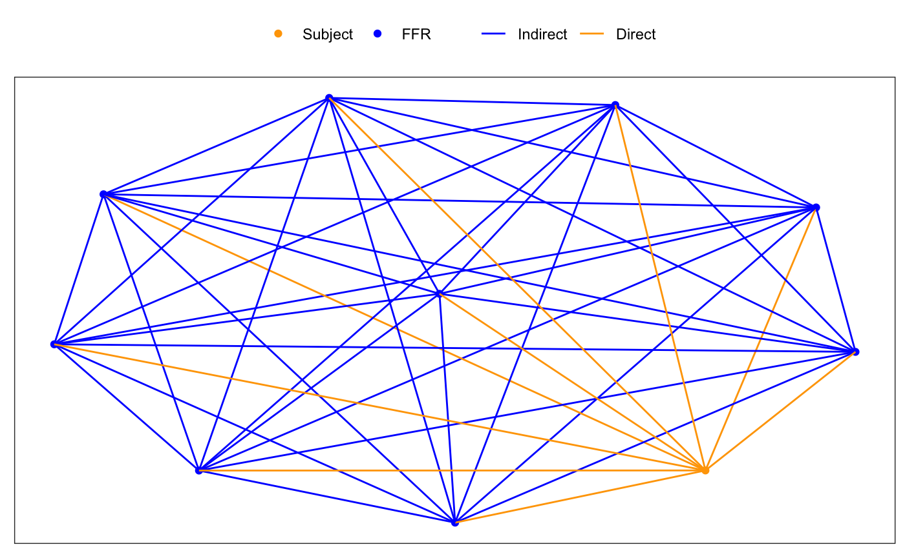
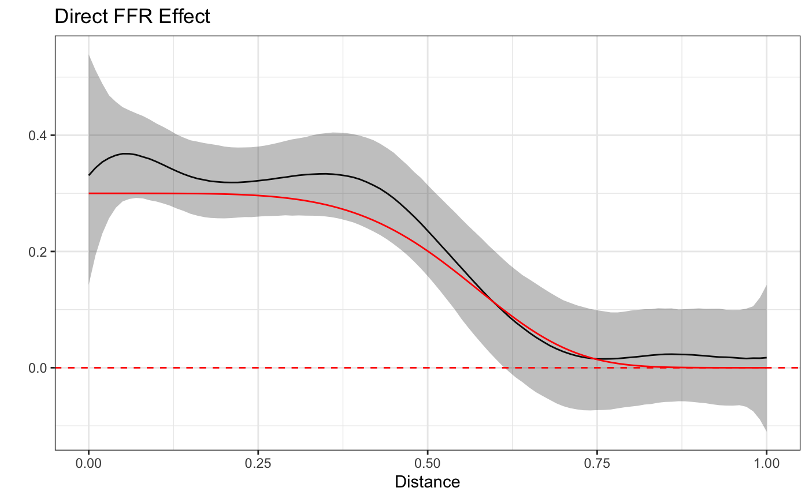
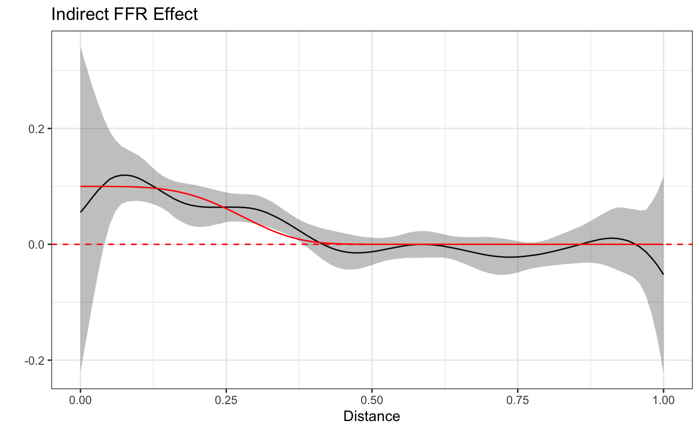

The introductory and longitudinal vignettes introduced the STAP modeling framework for estimating the effect of Built Environment Features (BEFs) as a function of space - how far they are from where subjects are (e.g. residential addresses) - and time - how long they live at that distance - in both a cross-sectional and longitudinal setting. In both settings the primary measurement was that between the subject and the BEF and consequently the effect estimated corresponded to that of conceptually placing a BEF at a certain point in space and time relative to the subject, henceforth called a Direct Effect.
In this vignette we introduce the concept of Indirect Effects, that is, the effect associated with placing a BEF of the same or different type near another BEF. For example, placing one Fast Food Restaurant (FFR) near another FFR may increase the overall effect of those two FFRs to be more than what either FFR would have alone.
In this way, one can think of a network of BEFs, each amplifying or dampening the effects of one another according to their type, placement, and quantity in space/time.
What follows is a graphical illustration of this idea, a brief elaboration over the model framework as well as a discussion of the data set-up and relevant software syntax for fitting the model in rsstap. A sample model fitting using simulated data generated to mimic the hypothetical FFR example previously described completes the vignette. Before we get started, we’ll load the necessary libraries and data.
Direct Effects as previously described are those effects between a subject, where the outcome is observed, and a nearby BEF. To visualize this, consider the following graphic, where subject and FFR (as an example) locations are positioned to facilitate visualization.

The gold-orange colored lines indicate how the direct effects are estimated and understood - as the distance between a FFR and a subject. Similarly, The blue lines illustrate how the indirect effects are understood, the additional effect from having two FFRs located near one another. In the next section we’ll demonstrate how these ideas manifest in the model mathematics.
For outcome \(Y_i\) measured on the \(i\)th subject, \(i=1,...,n\) alongside subject covariates (e.g. sex, age, etc.) \(\mathbf{Z}_i\) and their corresponding effects \(\mathbf{\delta}\), the BEF network effects model extends the STAP model to include the Direct and Indirect Effects of BEFs (Spatial effects of FFRs in our example) in the following manner:
\[ E[Y_i] = \alpha + \mathbf{Z}_i^T \mathbf{\delta} + f(\text{Direct FFR}_i) + f(\text{Indirect FFR}_i), \] where the direct effect is modeled similar to the first example in the introductory vignette and \[ f(\text{Indirect }FFR_i), = \sum_{l=1}^{L} \sum_{d \in \mathcal{\mathcal{Q}_i}} \beta_l\phi_l(d). \] In the above, \(d\) is the distance between two nearby FFRs that are also near subject \(i\) and \(\mathcal{Q}\) is the set of all such between FFR distances for subject \(i\). Similar to all STAP models, \(\beta_l\) and \(\phi_l\) are basis function coefficients and expansion functions. It should be noted here that identifying concepts such as “near” likely require substantive knowledge to avoid over-including too many FFRs. Similarly,there is an important identifiability constraint here (as with all STAPs) that there be a different number of FFRs nearby one another. This is usually trivially satisfied in most practical applications, but it bears mentioning.
With all this modelling notation out of the way, we’ll move onto how to fit and explore these models using the rsstap package.
We’ll first show some descriptive information of the benvo that holds both the FFR and FFR-FFR distances. Note that the indirect distances/features can be included in a benvo just like any other BEF.
network_benvo #> Subject Data: #> ---------------------------: #> Observations: 2000 #> Columns: 5 #> #> BEF Data: #> ---------------------------: #> Number of Features: 2 #> Features: #> Name Measures #> 1 Direct FFR Distance #> 2 Indirect FFR Distance
While we might normally spend some time doing exploratory data analysis to more fully understand these data, in the interest of exposition, we’ll skip right to the model fitting to demonstrate how this model is fit. Thankfully, the syntax is fairly straightforward: an additional sap() term is included in the model formula, treating the extra distances as nothing more than another BEF term to be included in the model.
fit <- sstap_lm(BMI ~ sex + sap(`Direct FFR`) + sap(`Indirect FFR`), benvo=network_benvo, QR=TRUE)
Plotting the estimates alongside the true curves we can see that the model accurately captures both the direct and indirect effect.


It is important to remember that the indirect effects are a kind of interaction effect as they require the presence of both the FFR, the subject and other nearby FFRs. Furthermore, the indirect effect is generally likely to be smaller than the direct effect (as in this case), which are typically already very small. All this is to say that in order to have a reasonable chance of estimating these functions a large sample size (as with our simulated data) is likely required.
This vignette only included FFR direct and indirect effects between other FFRs but one can imagine indirect effects between FFRS and other types of BEFs (parks, convenience stores, etc.). Furthermore, we only looked at spatial functions here, but one can imagine incorporating a temporal component too, estimating Spatial-Temporal network effects.